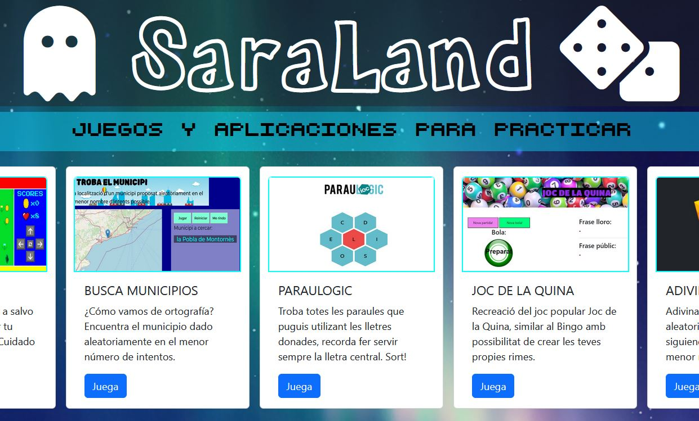

Portofolio

Saraland
Website aimed at collecting small projects that allow me to practice with the technologies I am
learning.
These projects are constantly being developed and improved.

Education
2021-2023
Computer Science: Web Development higher education cycle
Institut Obert de Catalunya IOC
2010-2012
Administration and Finance higher
education cycle
IES Severo Ochoa
2002-2004
Travel Agency higher educational cycle
IES Mediterránea
Experience
2016-Today
Parking
EL NOU RAVAL SL
EL NOU RAVAL SL
Parking Manager
In charge of collection, products, and daily
issues. Managins a team of 5.
2013-2015
Notaría Galdón-Rodríguez
Administrative clerk
Responsible for the maintenance and update
of the Databases of the notary.
Preparation of notarial documentation
2009-2013
Emergency Service 112
Coordinator
Activation and coordination of emergency
services (firefighters, police, ambulance…).